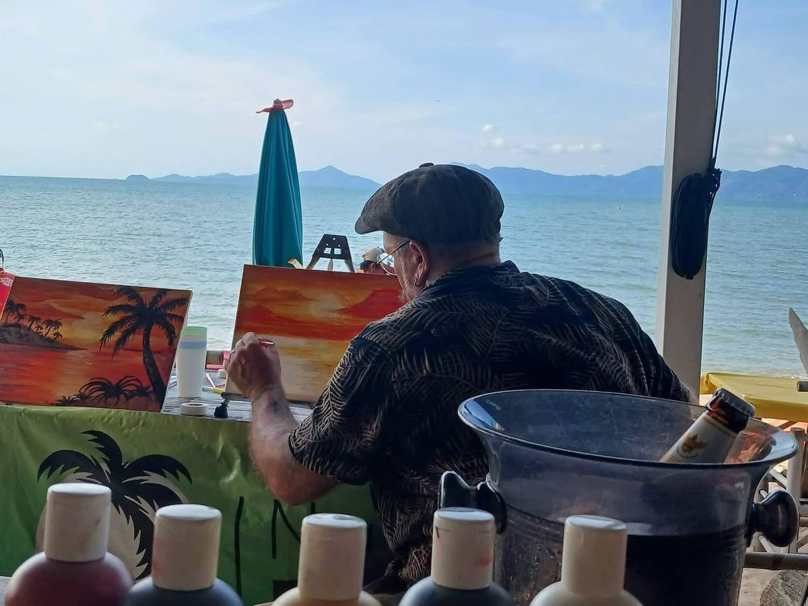
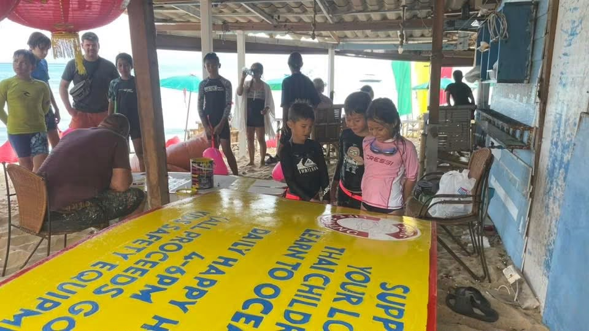
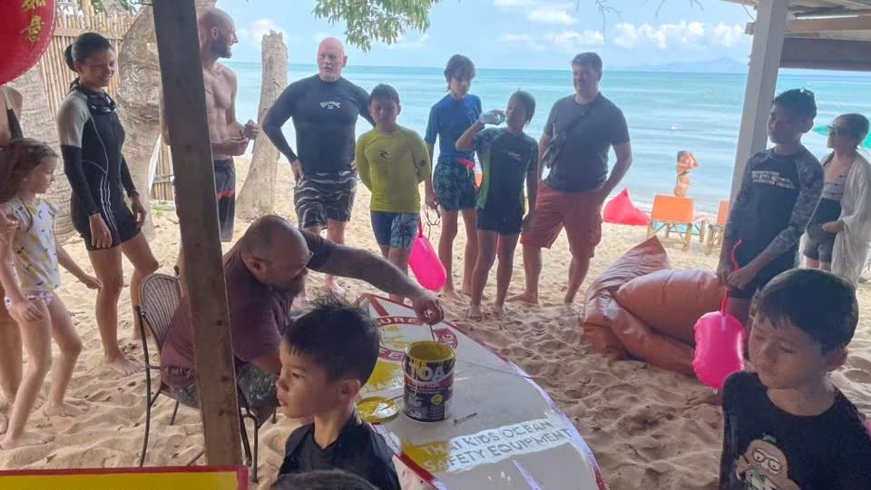
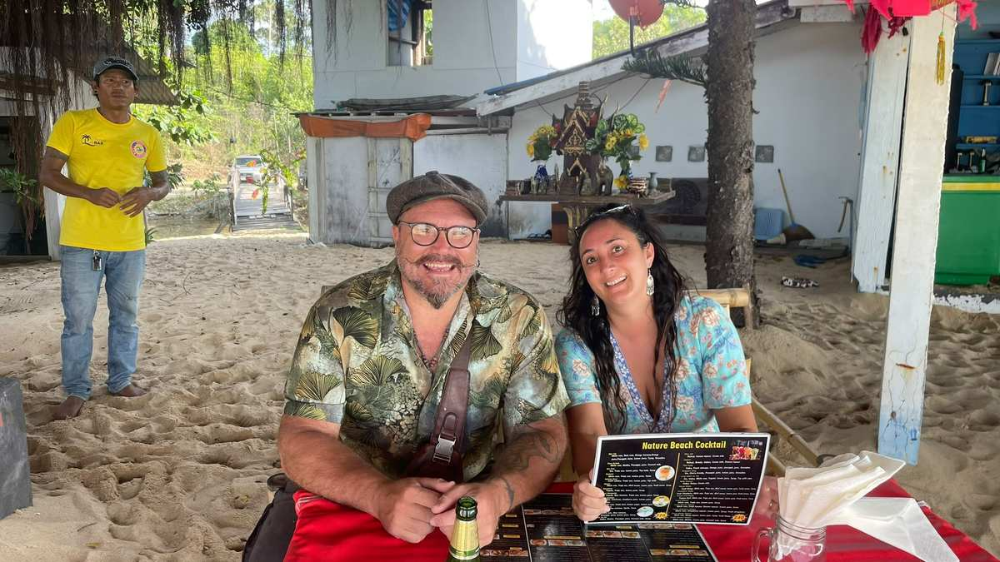
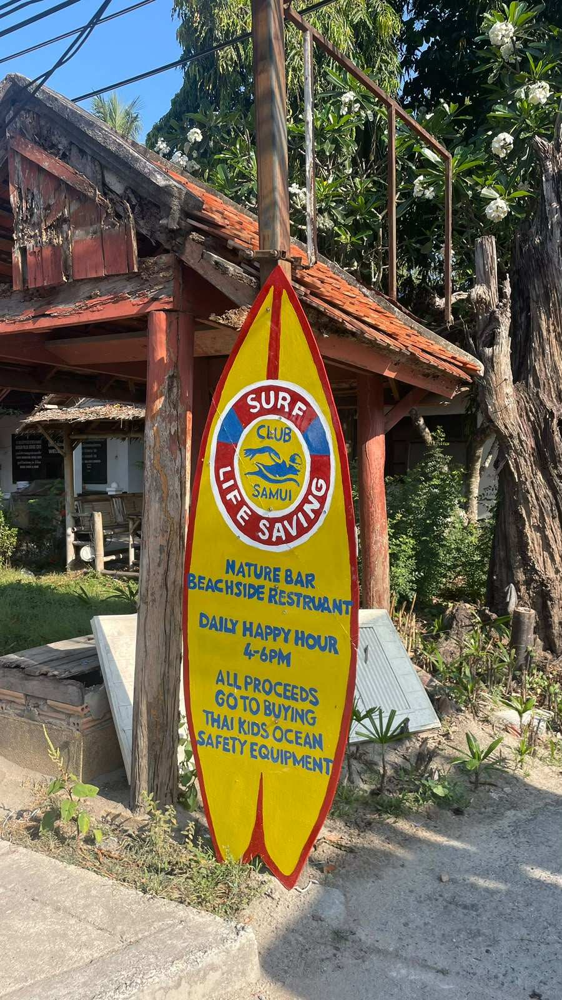

2025/2026 Committee
Tony

A huge thank you to our wonderful committee member, Tony Stephens, who has generously donated his time and talent to the Surf Club.
Tony has created some fantastic hand-painted boards for the club and, just as importantly, has been sharing his skills by teaching some of our children and other club members how to paint.
It's people like Tony, giving their time and knowledge back to others, who help make the Surf Club such a special part of our community.
Thank you, Tony, for your amazing support!



